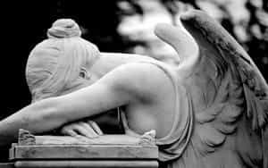
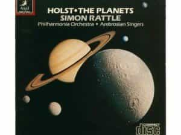

< < < Back
7 Pieces Of Beautiful Classical Music For Beginners – Return Of Kings
Some men find it difficult to obtain a taste for classical music. They may have heard snatches of it but were not much taken. Classical music is complex and rewards attentive, extended listening. Use this guide as an introduction to this venerable art form.
The Basics
Listen to an entire work from start to finish. Don’t waste your time with “best of” compilations which chop and change between different compositions. Would you turn off The End by the Doors partway through and switch over to Love Will Tear Us Apart by Joy Division? No. You’d listen to one, then the other. Pay the same respect to classical music even though the pieces tend to be longer.
When you’re starting out, pay all your attention to the music. Don’t listen to it while your brain is distracted by replying to work emails or teasing your girlfriend. Try lying down in a quiet room and doing nothing but listening to the composition you have chosen. You could also listen while driving on a country road or while doing brainless housework. This is advisable for the appreciation of any fine music.
Discover the artists or a styles that you prefer. Classical music is not a monolithic whole that you must either embrace or reject, just as appreciating a single malt Scotch doesn’t mean you must also enjoy dessert wine. Personally, I can’t stand Tchaikovsky’s girly ballet music and I find some of Beethoven’s most famous symphonies repetitive and dull. Try out a selection and see where your taste leads you.
Mozart
I recommend listening to the whole of Mozart’s Requiem. A requiem is a religious composition for the dead and is often used at funerals. The (possibly apocryphal) legend of the piece goes like this: towards the end of his rather debauched life, a mysterious man approached Mozart and said that an anonymous patron wished to commission a requiem. Mozart, stricken by a terminal illness, began to suspect that the man was a messenger from God and that the requiem would be for himself. Possessed by this awesome revelation he put into his work all the passion that can be stirred by death, faith and love. Mozart died partway through the composition of the requiem and it was completed by others. As you listen, you can hear the great man’s mortal brilliance slowly fading away as the piece progresses. Not a good one to listen to just before a party.

Rachmaninoff
Sergei Rachmaninoff was both one of the greatest composers and pianists of all time. His works are infamous for their intense physical and intellectual demands upon the musician. Any pianist who wants to prove his worth dreams of mastering, and making his own, Rachmaninoff’s Piano Concerto No. 2. The genius and intensity of this work make it a favorite in film and television soundtracks and it played a thematic role in Shine.
Beethoven
Need a break? For a short, exquisite piece which you will surely have heard before, try Beethoven’s Moonlight Sonata. A slowly building, tranquil piano piece that makes one think of stargazing in the quiet solitude of the mountains.
Holst
For a more recent and dramatic piece try The Planets by Gustav Holst. It is made up of seven movements, one for each of the planets (except this one). The work, which was composed from 1914-16, signals a move away from Romanticism and towards the excitement of modern discoveries. One can hear the echo of an early twentieth century Western society aching to rise above the Earth and its political chaos to seek glory in the exploration the heavens.

Bach
For an eminently civilized and cultured piece, try J.S. Bach’s Cello Suite No. 1. Anyone listening to this work will fancy himself a gentlemen admiring his estate through French windows, cognac in hand, chaffing slightly about the dangly bits in his tight brocade breeches.
Carl Orff
The one musician here who doesn’t go by just his last name, poor old Carl Orff gets a bit of a bad rap for his popularity with the Nazis. His bio certainly doesn’t give the impression of a courageous hero for any particular cause or principle. He makes up for this with his magnificently valiant, muscular Carmina Burana. Try listening to this one without swinging around an imaginary (or real) claymore, howling guttural taunts at your enemies as you slice them in twain.
Tchaikovsky
Let’s stay with the martial theme. I began by scorning him so I’ll finish off with a tribute. The old Russian composer celebrates the Fatherland’s victory over the puffed-up Frenchman Napoleon with this little ditty, the 1812 Overture. It builds slowly and finishes with a bang, kind of like what happens to anyone foolhardy enough to invade Russia. One of the few musical pieces to include cannons in live performances.
Concerts
Once you’ve identified your preferred flavors of classical music, try attending a concert. Go to see something that you’re already familiar with and know you’ll like. Hearing a real symphony orchestra blast out your favorite piece will knock your socks off.
Other Classical Styles of Music
Why stop there? You might enjoy the meditative, austere and strictly mathematical chants of Gregorian monks. You could explore classical Indian ragas with their own, complex mathematical patterns. And for the truly daring, there’s Chinese classical music with a key different to that of Western music—it will grate the ear until you get tuned into it.
Conclusion
If you choose to step off the well-worn path and listen to something unfamiliar, give it the greatest chance possible. Listen to a whole piece. Pay full attention to it. Try it two or three times. If you do all that and still don’t get into it, well, at least you had a go.
I have listed a small number of fairly accessible composers and pieces of music. Commenters are invited to offer their own suggestions.
Read More: 5 Reasons To Take Up Classical Music